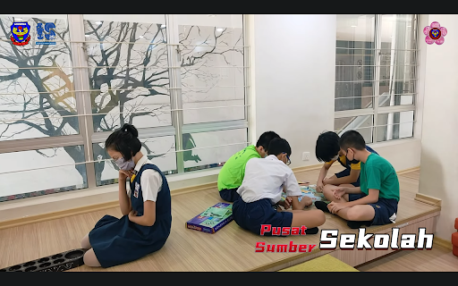

Library

- Our library is a very comfortable place for students to read and study. Air conditioners are installed in the library. All of the students can read their storybooks and check some information here. The histories of our school are recorded here. Some students will also find some information about science or borrow storybooks from here.

- There are computers for pupils to use to find information on the Internet. Hence, students can find all the information easily.

- Besides finding information, this is also a place where students can play Congkak, Sudoku, Chess, Chinese Chess, and many others. Therefore, all the students can relax themselves by playing games.
- Apart from that, the library is a place for students to study and relax. All the students can use the facilities in our library.